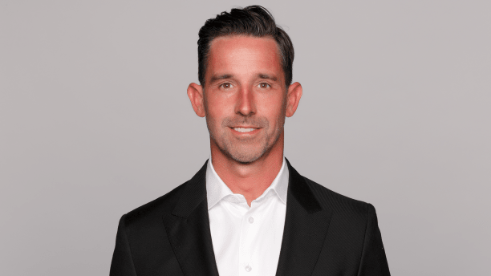
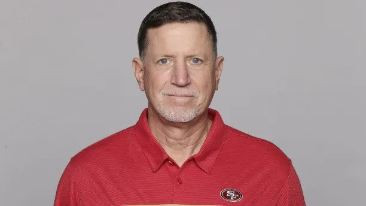
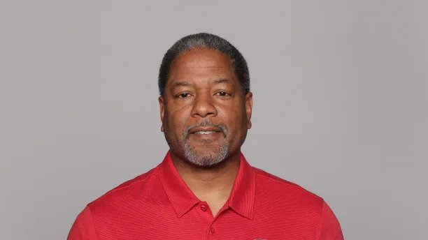
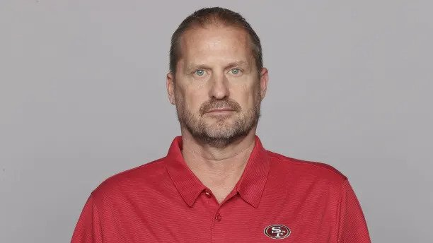

|

Head Coach Kyle Shanahan is an American football coach currently serving as the head coach of the San Francisco 49ers in the National Football League (NFL). He has worked as an offensive coordinator and assistant coach for multiple NFL teams including the Houston Texans, Washington Redskins, Cleveland Browns, Atlanta Falcons, and the San Francisco 49ers. Shanahan is known for his expertise in offensive play-calling, game planning, and developing top quarterbacks like Matt Ryan and Jimmy Garoppolo. His innovative and creative offensive schemes often involve using pre-snap motion and misdirection to confuse opposing defenses. |
|

Offensive Line/ Run Game Coordinator Chris Foerster currently serves as the run game coordinator and offensive line coach for the San Francisco 49ers, having joined the team in 2021 as the offensive line coach before taking on his current role. He previously worked with the team as the offensive line coach in 2008-09 and 2015 and as a consultant in 2018-19. During Foerster's tenure as offensive line coach in 2021, three members of the 49ers offensive line, including Trent Williams, Laken Tomlinson, and Alex Mack, earned Pro Bowl honors, with Williams also being named to the Associated Press 2021 First-Team All-Pro list. Under his leadership, the team's offense ranked seventh in the NFL, averaging 127.4 rushing yards per game. |

Defensive Coordinator Steve Wilks is a seasoned football coach with extensive experience at both the collegiate and professional levels. He recently joined the San Francisco 49ers as their defensive coordinator after serving as the interim head coach for the Carolina Panthers in 2022. Before that, he was the defensive coordinator at the University of Missouri in 2021 and had stints as the defensive coordinator for the Cleveland Browns and the head coach for the Arizona Cardinals. Wilks spent six seasons with the Panthers in his first stint with the team serving as defensive backs coach, assistant head coach, and defensive coordinator. He began his coaching career at the collegiate level and has held various coaching positions at several universities. |

Special Teams Coordinator Brian Schneider, with over 12 years of experience as a special teams coordinator in the NFL, has been appointed as the new special teams coordinator for the San Francisco 49ers, replacing Richard Hightower. Schneider's most notable achievement was working as the special teams coordinator of the Seattle Seahawks from 2010-20, during which Seattle's special teams units ranked first in the NFL in takeaways, second in blocked kicks, and fifth in touchdowns scored. Although San Francisco's special teams were lackluster in 2021, Schneider has a proven track record of reviving teams' special teams units, having produced mostly elite groups in his first few years with the Seahawks. Now he has been tasked with doing the same for the 49ers. |